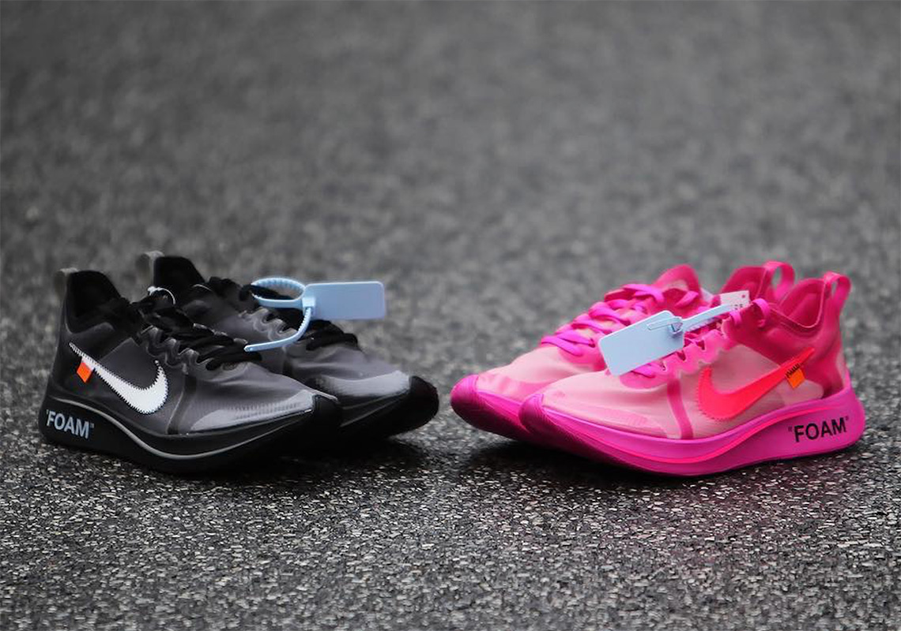
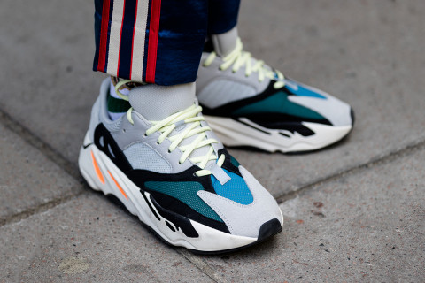
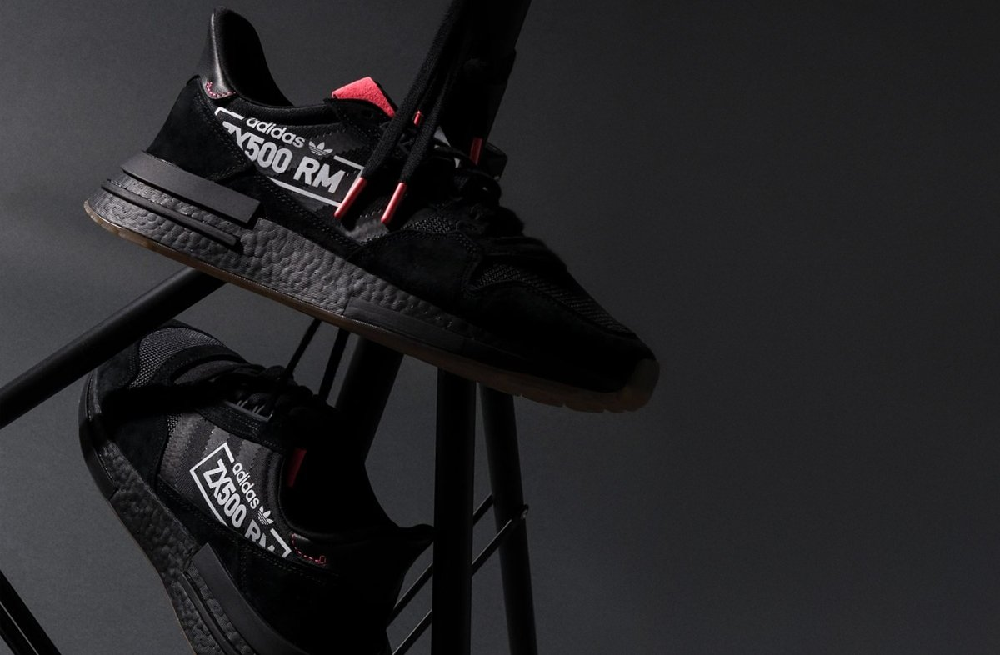

Off-White x Zoomfly next release
Virgil Abloh is in the middle of a sneaker run for the ages. His top-notch line of collaborative Off-White x Nike footwear has consistently birthed the most sought after releases for the better part of a year now, with absolutely no signs of slowing down. While most of his staples re-imagine lifestyle classics, his re-interpretation of the marathon-designed Nike Zoom Fly SP has led to the streetwear popularization of the model. In the silhouette’s early stages it received simplistic color schemes as well as city-specific models in conjunction with upcoming marathons.
But now, we have seen other Swoosh Brand co-creators like Jun Takahashi tap into the Zoom Fly’s versatility as well as a potential upcoming Doernbecher drop. Later this year two more Off-White Zoom Flys will grace retail shelves, with one of them donning an oft-replicated black and white color scheme while its counterpart opts for a vibrant combination of both Tulip and Racer Pink. Of course, no Virgil-made collaboration would be complete without revered embellishments from Helvetica-style typeface, to exposed stitching, and a Cone-orange square tag. While pairs were originally expected to drop on October 13th, the release has since been pushed back, with a drop expected to go down later this year.
Virgil Abloh is in the middle of a sneaker run for the ages. His top-notch line of collaborative Off-White x Nike footwear has consistently birthed the most sought after releases for the better part of a year now, with absolutely no signs of slowing down. While most of his staples re-imagine lifestyle classics, his re-interpretation of the marathon-designed Nike Zoom Fly SP has led to the streetwear popularization of the model. In the silhouette’s early stages it received simplistic color schemes as well as city-specific models in conjunction with upcoming marathons.
But now, we have seen other Swoosh Brand co-creators like Jun Takahashi tap into the Zoom Fly’s versatility as well as a potential upcoming Doernbecher drop. Later this year two more Off-White Zoom Flys will grace retail shelves, with one of them donning an oft-replicated black and white color scheme while its counterpart opts for a vibrant combination of both Tulip and Racer Pink. Of course, no Virgil-made collaboration would be complete without revered embellishments from Helvetica-style typeface, to exposed stitching, and a Cone-orange square tag. While pairs were originally expected to drop on October 13th, the release has since been pushed back, with a drop expected to go down later this year.
 The return of the OG Ultraboost
The return of the OG Ultraboost It's only been three years since the debut of the Adidas Ultra Boost, but an abundance of updates (the brand released the Ultra Boost 4.0 last December) has many devotees pining for simpler times. For those who've been hoping for a return of older styles, we've got some good news.
Retailer Rev Up Sports has confirmed that the "OG" Ultra Boost will rerelease this December. The black-based colorway is accented with a purple heel cup and features the model's fan-favorite 1.0 knit.
One curious detail of Rev Up Sports' stock images is the shoe's outsole, which appears to use the Ultra Boost's original tooling rather than the more durable Continental rubber introduced on the Ultra Boost 2.0. However, it's possible that these are simply placeholder images and don't represent what will release in December.
In addition to the return of the "OG" colorway, Yeezy Mafia tweeted in November that the sneaker's "Cream," "White Multicolor," and "Navy Multicolor" makeups would also be returning this fall, although those pairs have not yet been confirmed.
 New Jordan x Traviss Scott colab is on the way
New Jordan x Traviss Scott colab is on the wayTravis Scott and Nike have formed what may become one of the most interesting relationships in sneakers. Having released two models in three colorways, the pair is now moving on to one of the most important shoes of all time: the Jordan 1.
Every time that Travis Scott and Nike are teaming up on a new sneaker, the footwear world drops everything to learn more. This month, the leak came directly from La Flame himself, as the Houston rapper took to his social media to unveil a special version of the Air Jordan 1 complete with his Cactus Jack branding. Since then, sneakerheads have been bursting at the seams for more information regarding the new release- specifically when they can get their hands on a pair.
In addition to sharing the early release date for the Travis Scott Air Jordan 1, the leak account also shared out best look yet at the new colorway. Beginning with a smooth white leather base, the signature overlays are dyed in a deep brown color, giving the shoe a Chicago-style color blocking. Featuring Nike branding on the tongue in brown as well as an homage to “Cactus Jack”, this Jordan’s defining feature is the reverse Swoosh that stretches across the medial paneling. Never seen before on a Jordan 1, this pair will surely be a hit among fans of the silhouette.

The rise of the Adidas YEEZY boost 700
The adidas Yeezy 700 has been a nearly endless headline piece this year. As Kanye’s first foray into the chunky “dad” shoe world, the silhouette has grown to become one of the most coveted sneakers of the past year, so we took some time to break down just why.
The adidas Yeezy Boost 700 “Waverunner” first made its debut to the sneaker world back on August 12th, 2017. After several months of leaks and early photos, the silhouette surfaced for preorder on Kanye’s YeezySupply store. However, unlike your usual adidas Yeezy release, they didn’t sell out in seconds. Instead, pairs were available for presale in a full-size run for several hours, allowing time for consumers to make up their mind on the new silhouette. Like many sneakers, not everyone was initially sold on the chunky “dad” design, though, and what followed was one of the most intense debates in sneaker history.
When the Yeezy 700 first appeared on social media timelines, a majority of sneakerheads hated the shoe. Posts and images of the latest Kanye silhouette were met with comments outright labeling the look as garbage, while some joked about how they looked like something straight out of a mental ward. By the time they appeared on YeezySupply unexpectedly, dislike of the new Yeezy Boost was at its height.
The adidas Yeezy 700 has been a nearly endless headline piece this year. As Kanye’s first foray into the chunky “dad” shoe world, the silhouette has grown to become one of the most coveted sneakers of the past year, so we took some time to break down just why.
The adidas Yeezy Boost 700 “Waverunner” first made its debut to the sneaker world back on August 12th, 2017. After several months of leaks and early photos, the silhouette surfaced for preorder on Kanye’s YeezySupply store. However, unlike your usual adidas Yeezy release, they didn’t sell out in seconds. Instead, pairs were available for presale in a full-size run for several hours, allowing time for consumers to make up their mind on the new silhouette. Like many sneakers, not everyone was initially sold on the chunky “dad” design, though, and what followed was one of the most intense debates in sneaker history.
When the Yeezy 700 first appeared on social media timelines, a majority of sneakerheads hated the shoe. Posts and images of the latest Kanye silhouette were met with comments outright labeling the look as garbage, while some joked about how they looked like something straight out of a mental ward. By the time they appeared on YeezySupply unexpectedly, dislike of the new Yeezy Boost was at its height.

Adidas ZX500RM
The adidas ZX500 first released in 1984 as the brand’s offering for high-mileage running. The shoe became immensely popular due to its performance and comfort and has now become a beloved Originals silhouette in the modern era. The last time we saw the ZX500, the shoe was true to the original, a collector’s dream. This time around though, adidas is bringing the 80’s cult classic into the future with their beaded Boost technology.
The initial colorways of the new ZX500 RM Boost are two distinctly clean looks. The “Scarlet” colorway begins with a plain white mesh base in the midfoot and toe box, with deep grey suede panels to break up the color blocking. The D-ring lacing system comes in white to match the base, while the tongue and heel tab bring on the Scarlet color to complete the look. Finally, the smooth colorway is finished off by light grey EVA inserts in the midsole. Next, the second pair in the ZX500 Boost family is a more tonal take. The entire upper of this pair comes in a darker grey tone than its partner and features both black and Clear Orange details around the midsole.
The adidas ZX500 first released in 1984 as the brand’s offering for high-mileage running. The shoe became immensely popular due to its performance and comfort and has now become a beloved Originals silhouette in the modern era. The last time we saw the ZX500, the shoe was true to the original, a collector’s dream. This time around though, adidas is bringing the 80’s cult classic into the future with their beaded Boost technology.
The initial colorways of the new ZX500 RM Boost are two distinctly clean looks. The “Scarlet” colorway begins with a plain white mesh base in the midfoot and toe box, with deep grey suede panels to break up the color blocking. The D-ring lacing system comes in white to match the base, while the tongue and heel tab bring on the Scarlet color to complete the look. Finally, the smooth colorway is finished off by light grey EVA inserts in the midsole. Next, the second pair in the ZX500 Boost family is a more tonal take. The entire upper of this pair comes in a darker grey tone than its partner and features both black and Clear Orange details around the midsole.